1. libp2p文档
https://docs.libp2p.io/introduction/ libp2p是个开发p2p应用的框架. libp2p起源于IPFS, 以模块化的方式把基础的p2p网络分离为独立的libp2p. 那么libp2p有哪些功能? 解决了哪些通用问题?
- Transport: transport是p2p网络的基础, 负责peer间的实际数据的发送/接收. 为了支持现有的和将来的协议, libp2p定义了一组统一的interface
- Identity: 身份标识是安全和可靠网络的保证. libp2p用非对称加密的公钥做为peer的标识(PeerId), 这个PeerId就是每个peer的全球唯一名字; 因为p2p的"open"本质, PeerId既是名字又是公钥, 其他任何peer都可以通过PeerId得到其公钥. 这样在peer之间的通信是安全的.
- Security: libp2p支持TLS1.3(就是ssh用的那个, 前身是ssl)和Noise协议在transport上面加密传输数据.
- Peer Routing: 知道了PeerId, 还要知道网络上怎么访问到它. 经常我们只知道PeerId不知道网络位置, 这就需要peer路由. libp2p用DHT(distributed hash table, 通常每个node都预分配key空间, 所有的node组成一个大的hash表)来查询peer routing, DHT也可以提供其他metadata的key value的查询服务. go支持Kademlia的DHT算法(UDP based, O(log(n))的搜索效率)
- Content Discovery: 有时候我们不关心对方peer在哪, 只关心我要的内容能不能被其他peer提供. libp2p提供了内容发现的接口, 底层基于同样的Kademlia的DHT技术.
- Messaging / PubSub: peer发送消息给其他peer是p2p网络的核心, 其中pub/sub模式最为实用.libp2p定义了pub/sub的接口, 用于在给定topic下面发送消息给所有的peer. 目前支持简单粗暴的floodsub和比较高端的gossipsub. 后者的升级版本episub正在开发中.
1.1. 入门
listen的地址是0号端口, 自动分配. 这里关闭了内置的ping(还有内置的ping?)
func main() {
...
// start a libp2p node that listens on a random local TCP port,
// but without running the built-in ping protocol
node, err := libp2p.New(ctx,
libp2p.ListenAddrStrings("/ip4/127.0.0.1/tcp/0"),
libp2p.Ping(false),
)
// configure our own ping protocol
pingService := &ping.PingService{Host: node}
node.SetStreamHandler(ping.ID, pingService.PingHandler)
...
}
1.2. transport
最常见的transport是TCP, 另外也提到了QUIC(Quick UDP Internet Connections, google发布的基于UDP的协议), 其目标是替代TCP libp2p的设计初衷是transport透明化, 由开发者决定使用哪种transport, 或者同时支持多种transport.
1.2.1. QUIC
QUIC 与现有 TCP + TLS + HTTP/2 方案相比，有以下几点主要特征： 1）利用缓存，显著减少连接建立时间； 2）改善拥塞控制，拥塞控制从内核空间到用户空间； 3）没有 head of line 阻塞的多路复用； 4）前向纠错，减少重传； 5）连接平滑迁移，网络状态的变更不会影响连接断线。
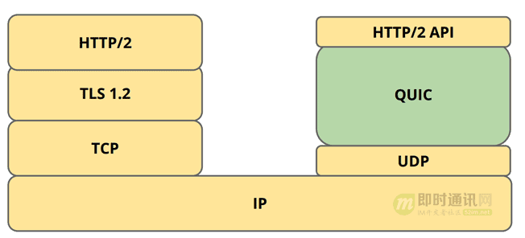
特性
- 采用 多路复用 思想，一个连接可以同时承载多个 流 ( stream )，同时发起多个请求。 请求间完全 独立 ，某个请求阻塞甚至报文出错均不影响其他请求。 对比 HTTP 长连接，由于 TCP 是只实现一个字节流，如果请求阻塞，新请求无法发起。
- 新的安全机制比 TLS 性能更好，而且具有各种攻击防御策略。
- 前向纠错 TCP 采用 重传 机制，而 QUIC 采用 纠错 机制。 TCP 发生丢包时，需要一个等待延时判断发生了丢包，然后再启动重传机制，这个过程会造成一定的阻塞，影响传输时间。 而 QUIC 则采用一种更主动的方案，有点类似 RAID5 ，每 n 个包额外发一个 校验和包 。 如果这 n 个包中丢 应用程序内实现 QUIC 直接基于客户端(应用进程)实现，而非基于内核，可以快速迭代更新，不需要操作系统层面的改造，部署灵活。 这也是不使用基于迭代升级 TCP 方案的原因 —— TCP 在操作系统内核中实现，很难进行大规模调整以及推广。
- 连接保持 QUIC 在客户端保存连接标识，当客户端 IP 或者端口发生变化时，可以快速恢复连接 —— 客户端以标识请求服务端，服务端验证标识后感知客户端新地址端口并重新关联，继续通讯。 这对于改善移动端应用连接体验意义重大(从 WiFi 切换到流量)。
libp2p里的quic
go-libp2p-quic-transport uses quic-go to provide QUIC support for libp2p.
1.2.2. 地址格式
libp2p使用一种叫multiaddr的东西来描述地址, 这个描述兼容所有的transport类型.
比如
/ip4/7.7.7.7/tcp/6543
libp2p的通信单元叫peer, 用peerId来唯一标识; 必须指定peerId来建立安全信道来通信.
/ip4/1.2.3.4/tcp/4321/p2p/QmcEPrat8ShnCph8WjkREzt5CPXF2RwhYxYBALDcLC1iV6
1.2.3. 同时支持多transport
一般libp2p是支持多transport, 比如一个服务可以同时对使用TCP的一个守护进程和使用websocket的浏览器服务. 能实现对多transport的多路复用, 是因为libp2p有个switch层(也叫swarm层), 提供了
- 协议协商: 当客户端dialing一个新的stream的时候, 它会发送protocol id来和服务端协商, 如果服务端也支持该协议, 就会返回这个协议ID, 之后的通信会使用这个协商好的协议来进行. 如果不支持, 返回不支持, 那么客户端要么停止, 要么发起另外一个protocol ID来进行下一轮协商. -- 想法: encoding也要协商
- stream多路复用: 就是使用一个物理的transport(比如一个TCP连接)来支持多个逻辑上的stream的通信. 一个stream有个很短的header来标记stream. libp2p使用mplex multiplexing实现, 同时也提供了yamux和spdy实现.
- mplex: 每次通信都会加个header, payload是固定长度的data segment. header是个base128的变长数, 最长9字节. mplex基于可靠的, 保序的传输层协议比如TCP或UDS. 这个应该是默认的.
| header | length | data | | uvarint | uvarint | 'length' bytes | - Yamux: 另外一种multiplexing, 支持双向stream, 支持流控, 同时支持大量stream消耗比较小.
- spdy: chrome浏览器项目, 面向web协议的
- mplex: 每次通信都会加个header, payload是固定长度的data segment. header是个base128的变长数, 最长9字节. mplex基于可靠的, 保序的传输层协议比如TCP或UDS. 这个应该是默认的.
- 建立安全连接
1.3. Nat穿透
- 有的路由器支持UPnP或nat-pmp协议, libp2p会尝试自动配置端口映射.
- STUN打洞: 内网能dial出去, 是因为内网路由器会map这个内部端口到对外可见的端口. 有的路由会把incoming的到这个端口的连接也转发给内网.
- libp2pyong
SO_REUSEPORT选项复用这个IP的端口号 - 内网出去方向的连接会在内网路由器分配一个对外的端口号, 这个端口号外部可见, 但内部是不知道的. 那么可以让外部的peer告诉我们我们的外部地址是什么, 然后我们就可以告诉p2p网络, 这个地址可以到达我们.
- 那么谁来当这个外部的观察者呢?传统的STUN实现需要固定的外部观察者, 而libp2p使用了identify protocol在peer间交换信息:
https://github.com/libp2p/specs/tree/master/identify, 基本上是个/ipfs/id/1.0.0这个协议ID, 交换的信息如下, 其中就有observedAddrmessage Identify { optional string protocolVersion = 5; optional string agentVersion = 6; optional bytes publicKey = 1; repeated bytes listenAddrs = 2; optional bytes observedAddr = 4; repeated string protocols = 3; } - AutoNAT服务: 在identify告知我们的外部观察port后, 还可以让它peer回拨我们的port, 这需要使能AutoNAT服务, 让对方回拨. 回拨成功就知道这个端口可以允许穿透内网.
- Circuit Relay (TURN): 有时候内网就是出不去, 这个协议可以先在内网找个跳板节点再访问. 比如内网的QmAlice想让QmBob访问, 她可以找个relay的节点:
/ip4/7.7.7.7/tcp/55555/p2p/QmRelay/p2p-circuit/p2p/QmAlice告知QmBob, 这样QmBob就可以通过这个relay的节点访问QmAlice了.
- libp2pyong
1.4. circuit relay
打开了autorelay的话, libp2p会使用内容路由的接口, 自动发现提供relay服务的peer. 当autoNAT服务发现我们在受限的NAT网络里面后, autorelay就起作用了
- discovering relay nodes around the world,
- establishing long-lived connections to them, and
- advertising relay-enabled addresses for ourselves to our peers, thus making ourselves routable through delegated routing.
When AutoNAT service detects we’re behind a NAT that blocks inbound connections, Autorelay jumps into action, and the following happens:
- We locate candidate relays by running a DHT provider search for the
/libp2p/relaynamespace. - We select three results at random, and establish a long-lived connection to them (
/libp2p/circuit/relay/0.1.0protocol). Support for using latency as a selection heuristic will be added soon. - We enhance our local address list with our newly acquired relay-enabled multiaddrs, with format:
/ip4/1.2.3.4/tcp/4001/p2p/QmRelay/p2p-circuit, where:1.2.3.4is the relay’s public IP address,4001is the libp2p port, andQmRelayis the peer ID of the relay. Elements in the multiaddr can change based on the actual transports at use. - We announce our new relay-enabled addresses to the peers we’re already connected to via the
IdentifyPushprotocol.
The last step is crucial, as it enables peers to learn our updated addresses, and in turn return them when another peer looks us up.
1.5. 协议和stream
- 这里说的协议是应用定义的协议, 协议id是任意字符串, 但按惯例是类似这样的:
/my-app/amazing-protocol/1.0.1 - 两端在协议对接的时候, 有个协商过程. 协议id使用全匹配方式
- 每个协议都可以set一个handler.
- 也可以set一个match handler, 自己进行协议匹配. 可以注册多个协议匹配handler, 当一个协议没有确切的handler的时候, 会逐个调用匹配handler来匹配. 可以使用
MultistreamSemverMatcher来匹配版本号 - dial的时候要传入协议id, 可以是多个, 通常是一个协议的多个版本.
- stream可以是半关闭的, 即以把写关了, 只保留读.
- stream地下的switch层是加密的, 但stream看到的是解密后的数据
1.5.1. 内置协议
内置协议都使用protobuf编码
/ipfs/ping/1.0.0: 一个peer来ping, 另外一个响应. 记录lattency/ipfs/id/1.0.0: 交换peerId的协议, 告知对方自己的信息. 特别的, identify协议的响应消息里有observedAddr, 用于告知对方它的外部观测的地址./ipfs/id/push/1.0.0: 用于通知别人自己的网络有变化/secio/1.0.0: secure IO. 用于加密通信. 因为peerId实际上是从公钥得出的, 所以可以验证签名是否正确. 这样就不需有像TLS中Certificate Authority的过程. -- 注意, secio是默认的加密协议, 但以后的默认加密协议是TLS1.3/ipfs/kad/1.0.0: dht协议/libp2p/circuit/relay/0.1.0: realy协议
1.6. peer ID
- 每个peer都有自己知道的私钥, 并把公钥公开到p2p网络中, 公钥的hash就是peer ID. 所以
- 连接上的peer都知道每个人的公钥
- peer ID其实不是字符串, 只是hash值用base58编码后, 字符串化了.
- peer info结构包括peerID和这个peer监听的multiaddr地址. 每个peer都有个"电话本", 记录它知道的peer info
1.7. 内容路由和peer发现
待续
1.8. 安全
libp2p的底层通信是加密, 但只是在传输层. 一个p2p网络通常还需要某种"权限控制"策略, 来决定谁有权限去做什么. libp2p没有提供内置的"权限控制"功能.
1.9. 发布和订阅
基于gossipsub协议的消息扩散策略.
- Reliability: All messages get delivered to all peers subscribed to the topic.
- Speed: Messages are delivered quickly.
- Efficiency: The network is not flooded with excess copies of messages.
- Resilience: Peers can join and leave the network without disrupting it. There is no central point of failure.
- Scale: Topics can have enormous numbers of subscribers and handle a large throughput of messages.
- Simplicity: The system is simple to understand and implement. Each peer only needs to remember a small amount of state.
1.9.1. 发现peer
这里的发现指发现同一个topic的peer, 如果gossipsub已经基于一个建立好的p2p网络, 怎么知道谁订阅了某个topic呢? 应用需要自己发现peer, 用下面的方法:
- Distributed hash tables
- Local network broadcasts
- Exchanging peer lists with existing peers
- Centralized trackers or rendezvous points
- Lists of bootstrap peers
1.9.2. full message和meta message
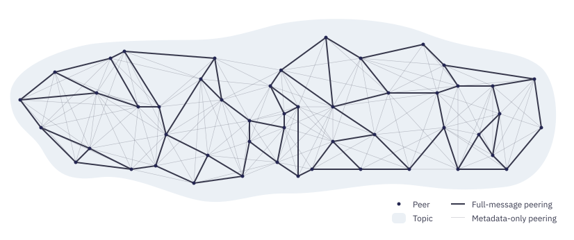
比如上图中, 有连接的节点都是一个topic下面的, 但只有粗实线的连接被用来传递"gossip". 上图配置成3个peer来做粗线, 通常配置成6, 一般在4-12之间.
meta data的连接用来维护gossip网络
- 粗线和细线可以互相转换: https://docs.libp2p.io/concepts/publish-subscribe/#grafting-and-pruning
- subscribe和unsubscribe信息交换: 每个peer都和它相连的peer交换各自的topic订阅信息.
- 发送消息: 消息会被粗线连接扩散.
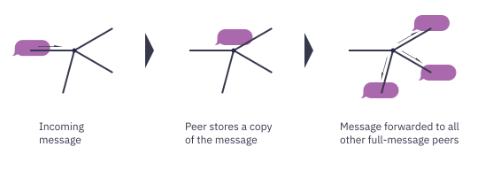 - 谣言八卦: 每秒钟, 细线连接间都互相八卦说我看到了什么gossip. 目的是补充实线网络中的遗漏, 如果一个peer发现它得到的八卦总是少点, 它就需要和别人多增加实线连接.
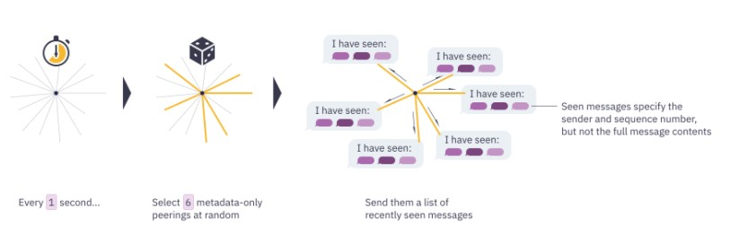 - 不需要订阅就可以发送某个topic下面的消息: 随机选择6个连接来发送
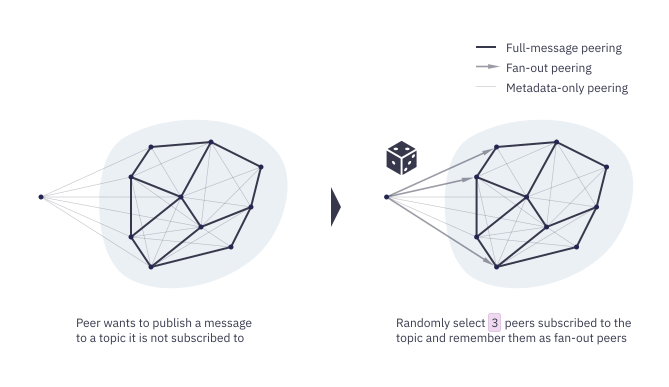 - 信息聚合: 不同类型的信息可以聚合在一起, 用一个报文发送
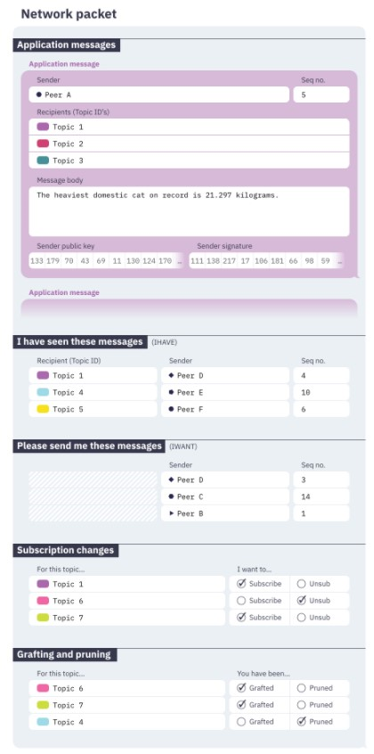
1.10. 多路复用
多路复用的目的是使用一个底层transport来服务多个stream. 这个switch(aka swarm)是在第一次建立transport连接的时候协商的. libp2p提供:
- mplex:libp2p自己写的, 比较简单
- yamux: 复杂点, 支持一些高级特性比如流控
- quic: 基于UDP的用户态TCP. 它实际上是一个transport, 但有native multiplexing能力. libp2p会在支持quic协议的节点直接使用这个能力.
- spdy: 目标是http2.0
- muxado: 可能比较小众...
1.11. 知识点
https://docs.libp2p.io/reference/glossary/
- Circuit Relay: 在两个不能直接连接的节点之间, 通过第三个willing node来连接. 比如两个不同内网的节点通过共同的外网节点relay; 或者一个说tcp, 一个说websocket的节点, 通过第三个说双语的节点来talk.
- DHT: 分布式的hash表. peer routing和content routing依赖DHT. 可以用来做内容发现和服务广播.
- Multihash: 用来产生peerID和其他libp2p系统内的hash值的.multihash在原hash基础上加了两个字节的头.这两个字节表示了hash算法和长度. 比如用base58编码后的
QmYyQSo1c1Ym7orWxLYvCrM2EmxFTANf8wXmmE7DWjhx5N,Qm就是加的两个字节, 表示SHA-256, 256bit长度.
2. go的开发状态
https://libp2p.io/implementations
2.1. transport
libp2p-tcp libp2p-quic libp2p-websockets 支持比较好
2.2. Stream muxers
libp2p-multiplex libp2p-yamux 已ready
2.3. Crypto channels
libp2p-secio libp2p-tls libp2p-noise
2.4. Connection & Connection Upgrades
libp2p-conn
2.5. Peer routing
libp2p-kad-dht
2.6. NAT Traversal
libp2p-nat还在开发中, 不稳定
2.7. Discovery
bootstrap random-walk mdns-discovery都OK
2.8. 其他
libp2p-floodsub libp2p-gossipsub crypto libp2p-ping libp2p-peer-info libp2p-peer-book libp2p-swarm都OK.
3. 例子
3.1. echo
运行两个echo实例, 一个是listener, 一个是sender 它们都是个basichost, 它是更底层的go-libp2p swarms的封装. swarm处理更细节的流, 连接, 多协议多路复用等.
3.1.1. makeBasicHost
// makeBasicHost creates a LibP2P host with a random peer ID listening on the
// given multiaddress. It won't encrypt the connection if insecure is true.
func makeBasicHost(listenPort int, insecure bool, randseed int64) (host.Host, error) {
var r io.Reader
if randseed == 0 {
r = rand.Reader
} else {
r = mrand.New(mrand.NewSource(randseed))
}
// Generate a key pair for this host. We will use it at least
// to obtain a valid host ID.
priv, _, err := crypto.GenerateKeyPairWithReader(crypto.RSA, 2048, r)
if err != nil {
return nil, err
}
opts := []libp2p.Option{
libp2p.ListenAddrStrings(fmt.Sprintf("/ip4/127.0.0.1/tcp/%d", listenPort)),
libp2p.Identity(priv),
libp2p.DisableRelay(),
}
if insecure {
opts = append(opts, libp2p.NoSecurity)
}
return libp2p.New(context.Background(), opts...)
}
crypto.GenerateKeyPairWithReader: 先用RSA生成私钥, 私钥可以推导出公钥libp2p.ListenAddrStrings: 使用写死的地址:/ip4/127.0.0.1/tcp/%dlibp2p.Identity: 使用上面的priv key生成PeerIdlibp2p.DisableRelay(): 禁止relay transportlibp2p.NoSecurity: libp2p默认都是加密的, 初非用这个显式声明非加密libp2p.New: 新建libp2p node的核心接口, 支持很多配置选项, 如果没有显式的指定, 有合理的默认值:- 默认监听
/ip4/0.0.0.0/tcp/0和/ip6/::/tcp/0 - 默认使用TCP和websocket传输协议
- 默认使用多路复用协议
yamux和mplux, 多路复用协议会在peer间协商? - 默认加密, 使用noise协议或者TLS
- 默认使用RSA 2048产生随机的PeerId
- 默认用空的peerstore(用于peer routing)
- 有个API
NewWithoutDefaults没有任何default配置, 但不建议使用.
- 默认监听
Host是p2p网络的一个实体, 它既是server, 可以提供服务; 又是client, 可以发送请求. 所以叫host, 是二合一. host有一系列聚合的抽象:
type Host interface { // ID returns the (local) peer.ID associated with this Host ID() peer.ID // Peerstore returns the Host's repository of Peer Addresses and Keys. Peerstore() peerstore.Peerstore // Returns the listen addresses of the Host Addrs() []ma.Multiaddr // Networks returns the Network interface of the Host Network() network.Network // Mux returns the Mux multiplexing incoming streams to protocol handlers Mux() protocol.Switch // Connect ensures there is a connection between this host and the peer with // given peer.ID. Connect will absorb the addresses in pi into its internal // peerstore. If there is not an active connection, Connect will issue a // h.Network.Dial, and block until a connection is open, or an error is // returned. // TODO: Relay + NAT. Connect(ctx context.Context, pi peer.AddrInfo) error // SetStreamHandler sets the protocol handler on the Host's Mux. // This is equivalent to: // host.Mux().SetHandler(proto, handler) // (Threadsafe) SetStreamHandler(pid protocol.ID, handler network.StreamHandler) // SetStreamHandlerMatch sets the protocol handler on the Host's Mux // using a matching function for protocol selection. SetStreamHandlerMatch(protocol.ID, func(string) bool, network.StreamHandler) // RemoveStreamHandler removes a handler on the mux that was set by // SetStreamHandler RemoveStreamHandler(pid protocol.ID) // NewStream opens a new stream to given peer p, and writes a p2p/protocol // header with given ProtocolID. If there is no connection to p, attempts // to create one. If ProtocolID is "", writes no header. // (Threadsafe) NewStream(ctx context.Context, p peer.ID, pids ...protocol.ID) (network.Stream, error) // Close shuts down the host, its Network, and services. Close() error // ConnManager returns this hosts connection manager ConnManager() connmgr.ConnManager // EventBus returns the hosts eventbus EventBus() event.Bus }
3.1.2. runListener
func runListener(ctx context.Context, ha host.Host, listenPort int, insecure bool) {
fullAddr := getHostAddress(ha)
log.Printf("I am %s\n", fullAddr)
// Set a stream handler on host A. /echo/1.0.0 is
// a user-defined protocol name.
ha.SetStreamHandler("/echo/1.0.0", func(s network.Stream) {
log.Println("listener received new stream")
if err := doEcho(s); err != nil {
log.Println(err)
s.Reset()
} else {
s.Close()
}
})
log.Println("listening for connections")
if insecure {
log.Printf("Now run \"./echo -l %d -d %s -insecure\" on a different terminal\n", listenPort+1, fullAddr)
} else {
log.Printf("Now run \"./echo -l %d -d %s\" on a different terminal\n", listenPort+1, fullAddr)
}
// Wait until canceled
<-ctx.Done()
}
getHostAddress: 使用mutliaddr的Encapsulate函数, 把peerId包装进network地址中:I am /ip4/127.0.0.1/tcp/10000/p2p/QmW1Ze4AbEtWtTg5ibcnsLgUPJsZ3wh1VuGzhqHtrvAp2eSetStreamHandler(pid protocol.ID, handler network.StreamHandler): 给mux层设定一个handler. 第一个参数是个string, 描述协议的, 第二个参数handler的签名是type StreamHandler func(Stream), 有点像OnConnect(), 同样的是会被框架传入Stream, 这是个在mux层之上的概念, 提供逻辑上的2个agent之间的双向通信, 是io reader和io writer, 它的下面是个multiplexer. 这里这个handler很简单, 就是doEcho. 因为s network.Stream是框架传入的, 能直接做io读写操做.// doEcho reads a line of data a stream and writes it back func doEcho(s network.Stream) error { buf := bufio.NewReader(s) str, err := buf.ReadString('\n') if err != nil { return err } log.Printf("read: %s", str) _, err = s.Write([]byte(str)) return err }
3.1.3. runSender
sender通过用于输入-d的地址, 比如/ip4/127.0.0.1/tcp/10000/p2p/QmW1Ze4AbEtWtTg5ibcnsLgUPJsZ3wh1VuGzhqHtrvAp2e来dial listener.
- 通过multiaddr的Decapsulate操做, 把targetPeerAddr提取出来:
/ip4/127.0.0.1/tcp/10000 - 然后add到peerstore中:
ha.Peerstore().AddAddr(peerid, targetAddr, peerstore.PermanentAddrTTL) s, err := ha.NewStream(context.Background(), peerid, "/echo/1.0.0"): NewStream连listener, 使用相同的echo1.0.0协议.- 然后直接调用
s.Write([]byte("Hello, world!\n"))来发送.
3.1.4. 总结
- listener和sender都是host, host是p2p网络的一个node
- host可以定制, 列表在https://pkg.go.dev/github.com/libp2p/go-libp2p
- listener指定stream的处理函数, 有新的stream连接的时候会调用.
- RSA等非对称算法生成的key是peerId
- multiaddr能够处理多地址协议, 统一地址的表达方式
- 空的peerstore不能"发现"peer, 所以本例的连接信息还是要用户输入.
- host.Newstream(ctx, peerId, ...protocolId)用于向指定peerId发起一个stream连接, protocolId是个
[]string, 指定要走的用户(多个)协议, 比如"/echo/1.0.0" - stream的抽象是io reader writer, 面向字节流的.
- sender类似client, client的逻辑是建立连接然后直接write
3.2. host
之前的echo的例子只是用了简单的option. 我们在这个例子里会用一些常用的option, 使能了routing, 使nat网络也能发现.
// To construct a simple host with all the default settings, just use `New`
h, err := libp2p.New(ctx)
//h2是个定制的host
h2, err := libp2p.New(ctx,
// Use the keypair we generated, 使用自定义key
libp2p.Identity(priv),
// Multiple listen addresses, 指定多个listen地址
libp2p.ListenAddrStrings(
"/ip4/0.0.0.0/tcp/9000", // regular tcp connections
"/ip4/0.0.0.0/udp/9000/quic", // a UDP endpoint for the QUIC transport
),
// support TLS connections
libp2p.Security(libp2ptls.ID, libp2ptls.New),
// support secio connections
libp2p.Security(secio.ID, secio.New),
// support QUIC - experimental
libp2p.Transport(libp2pquic.NewTransport),
// support any other default transports (TCP)
libp2p.DefaultTransports, // DefaultTransports是tcp和websocket
// Let's prevent our peer from having too many
// connections by attaching a connection manager.
libp2p.ConnectionManager(connmgr.NewConnManager(
100, // Lowwater
400, // HighWater,
time.Minute, // GracePeriod
)),
// 下面这几个配置了NAT可达
// Attempt to open ports using uPNP for NATed hosts.
libp2p.NATPortMap(),
// Let this host use the DHT to find other hosts
libp2p.Routing(func(h host.Host) (routing.PeerRouting, error) {
idht, err = dht.New(ctx, h)
return idht, err
}),
// Let this host use relays and advertise itself on relays if
// it finds it is behind NAT. Use libp2p.Relay(options...) to
// enable active relays and more.
libp2p.EnableAutoRelay(),
// If you want to help other peers to figure out if they are behind
// NATs, you can launch the server-side of AutoNAT too (AutoRelay
// already runs the client)
//
// This service is highly rate-limited and should not cause any
// performance issues.
libp2p.EnableNATService(),
)
配置好了host, 为了让这个host高可达, 还要连接预配置的bootstrap nodes.
// This connects to public bootstrappers
for _, addr := range dht.DefaultBootstrapPeers {
pi, _ := peer.AddrInfoFromP2pAddr(addr)
// We ignore errors as some bootstrap peers may be down
// and that is fine.
h2.Connect(ctx, *pi)
}
3.3. routed echo
在简单echo和host的基础上, routed echo配置一个host使用DHT,连接bootstrap节点, 使其能够被peer发现. 其他peer可以只根据peerId来访问它.
makeRoutedHost函数首先生成私钥, 然后配置options如下, 此时它还是个basic hostopts := []libp2p.Option{ libp2p.ListenAddrStrings(fmt.Sprintf("/ip4/0.0.0.0/tcp/%d", listenPort)), libp2p.Identity(priv), libp2p.DefaultTransports, libp2p.DefaultMuxers, libp2p.DefaultSecurity, libp2p.NATPortMap(), } ctx := context.Background() basicHost, err := libp2p.New(ctx, opts...)然后新建datastroe
// Construct a datastore (needed by the DHT). This is just a simple, in-memory thread-safe datastore. dstore := dsync.MutexWrap(ds.NewMapDatastore()) // Make the DHT dht := dht.NewDHT(ctx, basicHost, dstore) // Make the routed host -- 这步就是把basic host包装成routed host // 可以看出, routed host需要basic host和dht routedHost := rhost.Wrap(basicHost, dht) //这里的rhost就是go-libp2p/p2p/host/routed // connect to the chosen ipfs nodes // for每个bootstrap peer, 调用host.Connect // 奇怪的是在connect之前就把每个bootstrap peer的地址加到自己的peerstore中了: ph.Peerstore().AddAddrs(p.ID, p.Addrs, peerstore.PermanentAddrTTL) // -- 不奇怪, 要先知道地址信息, 再connect. 因为connect只需要peer ID err = bootstrapConnect(ctx, routedHost, bootstrapPeers) // Bootstrap the host err = dht.Bootstrap(ctx)- bootstrap peer如何确定的?
可以是全局写死的, 比如:
或者从本地http server获取IPFS_PEERS = convertPeers([]string{ "/ip4/104.131.131.82/tcp/4001/p2p/QmaCpDMGvV2BGHeYERUEnRQAwe3N8SzbUtfsmvsqQLuvuJ", "/ip4/104.236.179.241/tcp/4001/p2p/QmSoLPppuBtQSGwKDZT2M73ULpjvfd3aZ6ha4oFGL1KrGM", "/ip4/128.199.219.111/tcp/4001/p2p/QmSoLSafTMBsPKadTEgaXctDQVcqN88CNLHXMkTNwMKPnu", "/ip4/104.236.76.40/tcp/4001/p2p/QmSoLV4Bbm51jM9C4gDYZQ9Cy3U6aXMJDAbzgu2fzaDs64", "/ip4/178.62.158.247/tcp/4001/p2p/QmSoLer265NRgSp2LA3dPaeykiS1J6DifTC88f5uVQKNAd", })LOCAL_PEER_ENDPOINT = "http://localhost:5001/api/v0/id" resp, err := http.Get(LOCAL_PEER_ENDPOINT)
3.3.1. 总结
- client和server都连接了bootstrap节点, 都有dht
- 用到的包:
- go-libp2p basichost 基本的host, 没有peer发现的能力
- go-libp2p-kad-dht peer ID查找
- go-libp2p/p2p/host/routed 包装上述两个对象成为routed host
- routed host创建后, 就可以调用
NewStream打开一个双向的stream了, 这个stream就可以read write了. - host也可以调用
SetStreamHandle来listen incoming的连接.
3.4. chat
一个简单的聊天应用. 假设 A在内网, B在外网(有公网IP) 或者A和B都在局域网
3.4.1. 使用
在138机器上开启A:
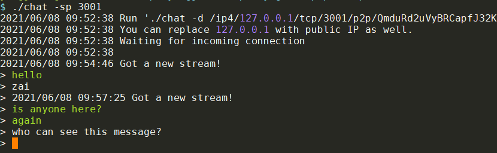
根据提示, 把127的地址改成大网IP. 在190服务器上连接A. 190服务器的这个chat叫做B.
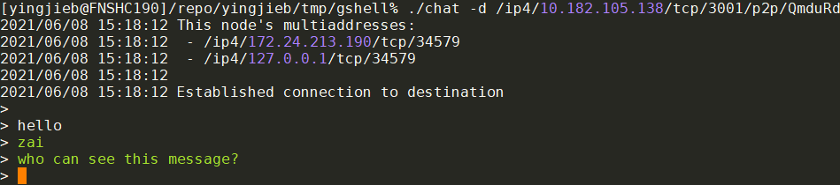
我又在138的docker环境里开了C, 同样连接A
- A能看到B和C发的消息
- A的回复只能B看到
- C不会收到回复
- 必须显式指定ip才能连上 所以chat只是两个人的chat, 第一次连上的两个.
3.4.2. 既然要IP, 那后面那一大串p2p的地址是干啥的?
答: 校验用的. 如果填错p2p地址, 比如B错填了A的地址, 会报错, 不让连接
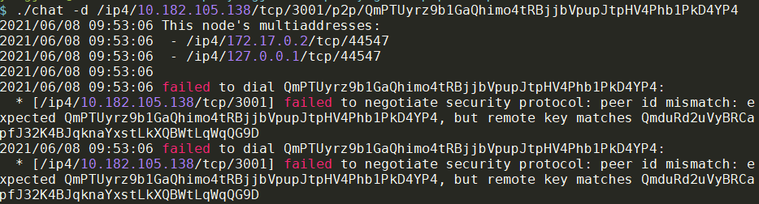
3.4.3. 代码
- 打印颜色
// Green console colour: \x1b[32m // Reset console colour: \x1b[0m fmt.Printf("\x1b[32m%s\x1b[0m> ", str) - 如果初始随机值一样, 得出的key每次都一样的:
if *debug { // Use the port number as the randomness source. // This will always generate the same host ID on multiple executions, if the same port number is used. // Never do this in production code. r = mrand.New(mrand.NewSource(int64(*sourcePort))) } else { r = rand.Reader } - 全0的地址会listen所有的网络接口
// 0.0.0.0 will listen on any interface device. sourceMultiAddr, _ := multiaddr.NewMultiaddr(fmt.Sprintf("/ip4/0.0.0.0/tcp/%d", port)) - "服务端"要
SetStreamHandler 可以让系统自动分配端口
// Let's get the actual TCP port from our listen multiaddr, in case we're using 0 (default; random available port). var port string for _, la := range h.Network().ListenAddresses() { if p, err := la.ValueForProtocol(multiaddr.P_TCP); err == nil { port = p break } } if port == "" { log.Println("was not able to find actual local port") return }"客户端"不仅要建立自己的host, 还要connect"服务端". 要先从-d选项的字符串里提取地址信息
// Turn the destination into a multiaddr. maddr, err := multiaddr.NewMultiaddr(destination) if err != nil { log.Println(err) return nil, err } // Extract the peer ID from the multiaddr. info, err := peer.AddrInfoFromP2pAddr(maddr) if err != nil { log.Println(err) return nil, err }先在peerstore里面add对端的地址, 然后就可以发起连接了.
// Add the destination's peer multiaddress in the peerstore. // This will be used during connection and stream creation by libp2p. h.Peerstore().AddAddrs(info.ID, info.Addrs, peerstore.PermanentAddrTTL) // Start a stream with the destination. // Multiaddress of the destination peer is fetched from the peerstore using 'peerId'. s, err := h.NewStream(context.Background(), info.ID, "/chat/1.0.0")使用bufio可以把阻塞的io读写变成非阻塞的:
// Start a stream with the destination. // Multiaddress of the destination peer is fetched from the peerstore using 'peerId'. s, err := h.NewStream(context.Background(), info.ID, "/chat/1.0.0") // Create a buffered stream so that read and writes are non blocking. rw := bufio.NewReadWriter(bufio.NewReader(s), bufio.NewWriter(s))
3.5. chat mdns
使能里mdns发现的chat. 其他的和chat一样
3.5.1. 使用
./chat-with-mdns -port 6666
./chat-with-mdns -port 6668
3.5.2. 代码
先New一个基本的host, 这个和普通的chat一样; SetStreamHandler也一样
// 0.0.0.0 will listen on any interface device. sourceMultiAddr, _ := multiaddr.NewMultiaddr(fmt.Sprintf("/ip4/%s/tcp/%d", cfg.listenHost, cfg.listenPort)) // libp2p.New constructs a new libp2p Host. // Other options can be added here. host, err := libp2p.New( ctx, libp2p.ListenAddrs(sourceMultiAddr), libp2p.Identity(prvKey), ) // Set a function as stream handler. // This function is called when a peer initiates a connection and starts a stream with this peer. host.SetStreamHandler(protocol.ID(cfg.ProtocolID), handleStream)使能mDNS, 等待并连接peer.
peerChan := initMDNS(ctx, host, cfg.RendezvousString) peer := <-peerChan // will block untill we discover a peer err := host.Connect(ctx, peer) // open a stream, this stream will be handled by handleStream other end stream, err := host.NewStream(ctx, peer.ID, protocol.ID(cfg.ProtocolID))go-libp2p/p2p/discovery提供了mDNS发现功能. 这个discovery包目前只有mdns发现方式. discoveryNotifee是被通知的一方. mdns发现新的peer, 就会发送到PeerChan, 这样就接上前面的从peerChan读peer信息, 再connect, 再NewStream的操做了.//Initialize the MDNS service func initMDNS(ctx context.Context, peerhost host.Host, rendezvous string) chan peer.AddrInfo { // An hour might be a long long period in practical applications. But this is fine for us ser, err := discovery.NewMdnsService(ctx, peerhost, time.Hour, rendezvous) //register with service so that we get notified about peer discovery n := &discoveryNotifee{} n.PeerChan = make(chan peer.AddrInfo) ser.RegisterNotifee(n) return n.PeerChan }"github.com/whyrusleeping/mdns"是底层提供mdns的包, mdns的query返回ServiceEntry
// ServiceEntry is returned after we query for a service type ServiceEntry struct { Name string Host string AddrV4 net.IP AddrV6 net.IP Port int Info string // peerID就是用这个field来传递的. InfoFields []string Addr net.IP // @Deprecated hasTXT bool }p2p/discovery/mdns.go的NewMdnsService函数中, 起了个mdns.NewMDNSService(), 自己的ID就会被当作Info传进去info := []string{myid} if serviceTag == "" { serviceTag = ServiceTag } service, err := mdns.NewMDNSService(myid, serviceTag, "", "", port, ipaddrs, info)
3.6. chat with peer发现, 基于dht
3.6.1. 用到的package
"github.com/libp2p/go-libp2p"
"github.com/libp2p/go-libp2p-core/network"
"github.com/libp2p/go-libp2p-core/peer"
"github.com/libp2p/go-libp2p-core/protocol"
"github.com/libp2p/go-libp2p-discovery"
dht "github.com/libp2p/go-libp2p-kad-dht"
multiaddr "github.com/multiformats/go-multiaddr"
3.6.2. 代码
- 还是先New一个host
// libp2p.New constructs a new libp2p Host. Other options can be added // here. host, err := libp2p.New(ctx, libp2p.ListenAddrs([]multiaddr.Multiaddr(config.ListenAddresses)...), ) // Set a function as stream handler. This function is called when a peer // initiates a connection and starts a stream with this peer. host.SetStreamHandler(protocol.ID(config.ProtocolID), handleStream) 后面这里厉害了, 注意看注释: New了一个dht还不够, 还需要Bootstrap, 这样每个node都有个dht的拷贝, 即使初始节点down了也不影响后续的peer发现. Bootstrap这个函数会每5分钟后台刷新这个dht
// Start a DHT, for use in peer discovery. We can't just make a new DHT // client because we want each peer to maintain its own local copy of the // DHT, so that the bootstrapping node of the DHT can go down without // inhibiting future peer discovery. kademliaDHT, err := dht.New(ctx, host) // Bootstrap the DHT. In the default configuration, this spawns a Background // thread that will refresh the peer table every five minutes. err = kademliaDHT.Bootstrap(ctx)- 接下来就要连接bootstrap节点了
for _, peerAddr := range config.BootstrapPeers { peerinfo, _ := peer.AddrInfoFromP2pAddr(peerAddr) go func() { host.Connect(ctx, *peerinfo) } } 接下来要声明"meet me here"服务, 然后通过FindPeer功能找到"同类"
discovery这块在go-libp2p-discovery/routing.go// We use a rendezvous point "meet me here" to announce our location. // This is like telling your friends to meet you at the Eiffel Tower. logger.Info("Announcing ourselves...") routingDiscovery := discovery.NewRoutingDiscovery(kademliaDHT) discovery.Advertise(ctx, routingDiscovery, config.RendezvousString) logger.Debug("Successfully announced!") // Now, look for others who have announced // This is like your friend telling you the location to meet you. logger.Debug("Searching for other peers...") peerChan, err := routingDiscovery.FindPeers(ctx, config.RendezvousString)RoutingDiscovery是个子类, 继承了go-libp2p-core/routing的ContentRouting
ContentRouting是对内容的routing, 那么内容由一个hash值标识(Cid)// RoutingDiscovery is an implementation of discovery using ContentRouting. // Namespaces are translated to Cids using the SHA256 hash. type RoutingDiscovery struct { routing.ContentRouting }ContentRouting在
go-libp2p-core/routing/routing.go// ContentRouting is a value provider layer of indirection. It is used to find // information about who has what content. // // Content is identified by CID (content identifier), which encodes a hash // of the identified content in a future-proof manner. type ContentRouting interface { // Provide adds the given cid to the content routing system. If 'true' is // passed, it also announces it, otherwise it is just kept in the local // accounting of which objects are being provided. Provide(context.Context, cid.Cid, bool) error // Search for peers who are able to provide a given key // // When count is 0, this method will return an unbounded number of // results. FindProvidersAsync(context.Context, cid.Cid, int) <-chan peer.AddrInfo }- 得到了peerChan, 那么最后就range这个peerChan, 对每个peer都Newstream一把.
3.6.3. 总结
和上个chat不同的是, 这里使用dht来发现peer. 上一个是用mdns协议在局域网发现.
3.7. pub sub chat room
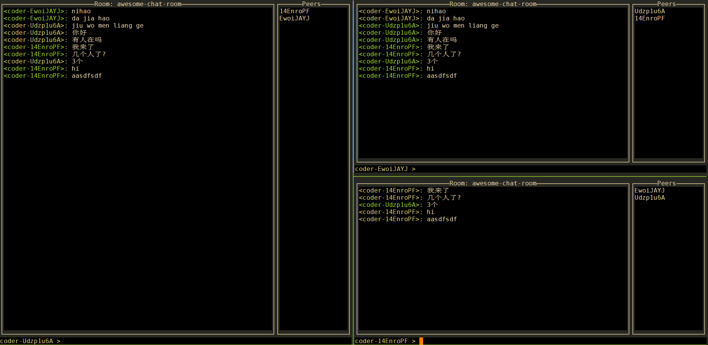
3.7.1. 代码
还是首先建立一个基本的host, 使用系统分配的端口
ctx := context.Background() // create a new libp2p Host that listens on a random TCP port h, err := libp2p.New(ctx, libp2p.ListenAddrStrings("/ip4/0.0.0.0/tcp/0"))- 用gossipsub协议建立一个pubsub服务
// create a new PubSub service using the GossipSub router ps, err := pubsub.NewGossipSub(ctx, h) - 用到了
libp2p/go-libp2p-pubsub包, 这个包重度使用了map, 有点复杂. - gossip网络扩散"gossip", 但每个peer只扩散大约4个周边的peer. node对topic进行订阅, 发布者在某个topic上发布消息, 消息扩散到所有订阅了topic的node. 这个行为又叫overlay multicast. pubsub对象基于topic, 提供基础方法; 在此基础上提供了三个router: 暴力广播式的Floodsub, 随机选择下线peer的Randomsub, 基于gossip协议的Gossipsub
- 用topic的Publish APi来发送消息, 不用订阅topic就可以发送消息
- 用topic的Subscribe来订阅返回sub对象, sub对象的Next方法返回下一条消息.
- 消息是用protocol buf来封装的
- 配合官方pubsub说明来理解: https://docs.libp2p.io/concepts/publish-subscribe/
- 使用mdns协议内网发现, 默认1个小时更新一次列表
// setup local mDNS discovery err = setupDiscovery(ctx, h) - 接下来就是加入聊天室开始ui
// join the chat room cr, err := JoinChatRoom(ctx, ps, h.ID(), nick, room) // draw the UI ui := NewChatUI(cr) ui.Run() - join的过程就是pubsub Join一个topic的过程, 底层是个Subscribe的过程.
最后开始后台routine, 读这个topic.Next, 发送给ui
注意虽然pubsub使用gpb编码的, 但里面的msg.Data是json编码的 ```go // join the pubsub topic topic, err := ps.Join(topicName(roomName)) // and subscribe to it sub, err := topic.Subscribe() cr := &ChatRoom{ ctx: ctx, ps: ps, topic: topic, sub: sub, self: selfID, nick: nickname, roomName: roomName, Messages: make(chan *ChatMessage, ChatRoomBufSize), }
// start reading messages from the subscription in a loop go cr.readLoop()
* ui负责打印收到的message.
## relay
### 代码
* h1显式使能了relay功能, 这里指使用realy功能的功能
```go
// Tell the host use relays
h1, err := libp2p.New(context.Background(), libp2p.EnableRelay())
- h2能给其他node提供relay功能
// Tell the host to relay connections for other peers (The ability to *use* // a relay vs the ability to *be* a relay) h2, err := libp2p.New(context.Background(), libp2p.EnableRelay(circuit.OptHop)) - h3清空了listen地址(默认是全部interface监听), 让h3只能通过上面的circuit relay来通信
// Zero out the listen addresses for the host, so it can only communicate // via p2p-circuit for our example h3, err := libp2p.New(context.Background(), libp2p.ListenAddrs(), libp2p.EnableRelay()) - 分别连接h1和h3到h2, 但h1和h3不直接连接
h2info := peer.AddrInfo{ ID: h2.ID(), Addrs: h2.Addrs(), } err := h1.Connect(context.Background(), h2info) err := h3.Connect(context.Background(), h2info) 测试h1到h3的连通性
// Now, to test things, let's set up a protocol handler on h3 h3.SetStreamHandler("/cats", func(s network.Stream) { log.Println("Meow! It worked!") s.Close() }) //下面这块演示了直接从h1连接到h3是不行的. _, err = h1.NewStream(context.Background(), h3.ID(), "/cats") if err == nil { log.Println("Didnt actually expect to get a stream here. What happened?") return } log.Printf("Okay, no connection from h1 to h3: %v", err) log.Println("Just as we suspected") // Creates a relay address to h3 using h2 as the relay relayaddr, err := ma.NewMultiaddr("/p2p/" + h2.ID().Pretty() + "/p2p-circuit/ipfs/" + h3.ID().Pretty()) //先清理h3, 因为刚才连接失败了, 默认不让马上连 // Since we just tried and failed to dial, the dialer system will, by default // prevent us from redialing again so quickly. Since we know what we're doing, we // can use this ugly hack (it's on our TODO list to make it a little cleaner) // to tell the dialer "no, its okay, let's try this again" h1.Network().(*swarm.Swarm).Backoff().Clear(h3.ID()) //使用h3的relay地址连接 h3relayInfo := peer.AddrInfo{ ID: h3.ID(), Addrs: []ma.Multiaddr{relayaddr}, } //h1可以连接到h3了 h1.Connect(context.Background(), h3relayInfo) s, err := h1.NewStream(context.Background(), h3.ID(), "/cats") s.Read(make([]byte, 1)) // block until the handler closes the stream
3.8. multipro
创建两个host, 同时支持自定义的ping协议和echo协议. 每个自定的协议都是用protobuf来request和response 这样的好处是, 通过协议号先分流不同的行为, 而不是像一般的应用, 只有一个protobuf的结构体, 里面有大量的可选fields. 这个例子可以处理异步的response, 并匹配到其对应的request. 在message级别使用libp2p protocol multiplexing
3.8.1. 代码
- Node是个多协议的组合体
new一个Node就是new ping协议和echo协议// Node type - a p2p host implementing one or more p2p protocols type Node struct { host.Host // lib-p2p host *PingProtocol // ping protocol impl *EchoProtocol // echo protocol impl // add other protocols here... }// Create a new node with its implemented protocols func NewNode(host host.Host, done chan bool) *Node { node := &Node{Host: host} node.PingProtocol = NewPingProtocol(node, done) node.EchoProtocol = NewEchoProtocol(node, done) return node } - ping协议有两级的protocol名
// pattern: /protocol-name/request-or-response-message/version const pingRequest = "/ping/pingreq/0.0.1" const pingResponse = "/ping/pingresp/0.0.1" - ping使用一个map来记录request和response的关系
// PingProtocol type type PingProtocol struct { node *Node // local host requests map[string]*p2p.PingRequest // used to access request data from response handlers done chan bool // only for demo purposes to stop main from terminating } - NewPingProtocol的时候要set两个handler, pingreq和pingresp分别一个.
另外, 这里还用到了高级技巧: 方法当作函数
func NewPingProtocol(node *Node, done chan bool) *PingProtocol { p := &PingProtocol{node: node, requests: make(map[string]*p2p.PingRequest), done: done} node.SetStreamHandler(pingRequest, p.onPingRequest) node.SetStreamHandler(pingResponse, p.onPingResponse) return p } - pingreq的handler
// remote peer requests handler func (p *PingProtocol) onPingRequest(s network.Stream) { //大概流程是从s读request, 然后马上关闭s. 因为s只包括一次request //读到data先proto.Unmarshal到&p2p.PingRequest{}结构体 data := &p2p.PingRequest{} buf, err := ioutil.ReadAll(s) s.Close() proto.Unmarshal(buf, data) //这部就关键了: 每个request都要验证签名 valid := p.node.authenticateMessage(data, data.MessageData) //然后组一个response, 并签名 resp := &p2p.PingResponse{MessageData: p.node.NewMessageData(data.MessageData.Id, false), Message: fmt.Sprintf("Ping response from %s", p.node.ID())} signature, err := p.node.signProtoMessage(resp) // add the signature to the message resp.MessageData.Sign = signature //最后发送这个response, 这个函数里面每次都会新建一个stream来发送. 对Lip2p来说, 因为用了多路复用, 一个stream好像没有那么重. p.node.sendProtoMessage(s.Conn().RemotePeer(), pingResponse, resp) } - pingrep的handler类似的, 逻辑很简单, 就是收到对方的response, 说明对方收到了我们的request, 并且回复了, 那我们就删除之前的reqeust map里面记录的id.
// locate request data and remove it if found _, ok := p.requests[data.MessageData.Id] if ok { // remove request from map as we have processed it here delete(p.requests, data.MessageData.Id) } else { log.Println("Failed to locate request data boject for response") return } - echo协议也非常类似
- main流程如下:
- 建立两个对等的host, 比较普通的那种
priv, _, _ := crypto.GenerateKeyPair(crypto.Secp256k1, 256) listen, _ := ma.NewMultiaddr(fmt.Sprintf("/ip4/127.0.0.1/tcp/%d", port)) host, _ := libp2p.New( context.Background(), libp2p.ListenAddrs(listen), libp2p.Identity(priv), ) 最后run 注意这里也是先Peerstore添加peer的信息, 但没有马上connect. 而是等到后面NewStream的时候再连接.
// connect peers h1.Peerstore().AddAddrs(h2.ID(), h2.Addrs(), peerstore.PermanentAddrTTL) h2.Peerstore().AddAddrs(h1.ID(), h1.Addrs(), peerstore.PermanentAddrTTL) // send messages using the protocols h1.Ping(h2.Host) h2.Ping(h1.Host) h1.Echo(h2.Host) h2.Echo(h1.Host)3.8.2. 总结
- 使用了host的SetStreamHandler()函数注册协议的handler, 这里使用了多个协议(ping和echo), 大协议里面还有小协议(req和rep). 可见一个host可以set多个协议的handler.
3.9. 总结的总结
- host是个基础设施实体, 类似IP协议的地位, 上面可以运行不同的protocol(可以类比为端口号)
- 比如
pubsub.NewGossipSub(ctx, h)的入参是一个ctx和一个host. 并不是说"注册"一个gossipsub给这个host, 相反的, host只提供基础能力, gossipsub主动使用host的能力, 自主的维护基于这个host节点的gossip网络. - 多个不同的"功能"可以在一个host节点上同时运行. 比如同时运行一个mdns服务
- 比如
- SetStreamHandler是每个protocol一个, 这里的protocol不是指tcp啥的, 而是一个string, 比如
/chat/1.1.0, 或者/echo/1.0.0 - 对应的, "client"在NewStream的时候, 也要传入一个protocol.ID
3.10. 扩展
- host的底层是swarm(蜂巢), 新建一个swarm需要5个参数:
swarm, err := NewSwarm(ctx, laddrs, pid, pstore, bwc) ctx: ctx laddrs: an array of multiaddrs that the swarm will open up listeners for pid: peer id. 通常是RSA的key生成的ID pstore: 存peer id用的 bwc: 统计用的. - swarm是基于多路复用的. stream可以set handler
swrm.SetStreamHandler(func(s inet.Stream) { defer s.Close() fmt.Println("Got a stream from: ", s.SwarmConn().RemotePeer()) fmt.Fprintln(s, "Hello Friend!") }) - 也可以直接连接NewStreamWithPeer
s, err := swrm.NewStreamWithPeer(ctx, rpid) defer s.Close() io.Copy(os.Stdout, s) // pipe the stream to stdout - 在swarm这一层, 没有protocol ID; 后者是host层加的.
4. host的option
libp2p.New: 新建libp2p node的核心接口, 支持很多配置选项, 如果没有显式的指定, 有合理的默认值:
- 默认监听
/ip4/0.0.0.0/tcp/0和/ip6/::/tcp/0 - 默认使用TCP和websocket传输协议
- 默认使用多路复用协议
yamux和mplux, 多路复用协议会在peer间协商? - 默认加密, 使用noise协议或者TLS
- 默认使用RSA 2048产生随机的PeerId
- 默认用空的peerstore(用于peer routing)
- 有个API
NewWithoutDefaults没有任何default配置, 但不建议使用.
可选配置如下:
- ListenAddrStrings: 指定(多个)listen地址, 使用原始字符串表达
libp2p.ListenAddrStrings("/ip4/0.0.0.0/tcp/0")) libp2p.ListenAddrStrings( "/ip4/0.0.0.0/tcp/9000", // regular tcp connections "/ip4/0.0.0.0/udp/9000/quic", // a UDP endpoint for the QUIC transport ) - ListenAddrs: 指定(多个)listen地址, 使用Multiaddr表达
listen, _ := ma.NewMultiaddr(fmt.Sprintf("/ip4/127.0.0.1/tcp/%d", port)) libp2p.ListenAddrs(listen), - Security: 配置transport加密
// support TLS connections libp2p.Security(libp2ptls.ID, libp2ptls.New), // support secio connections libp2p.Security(secio.ID, secio.New), - NoSecurity: 不加密
- Muxer: 配置multiplexing
- Transport: 配置支持的transport
// support QUIC - experimental libp2p.Transport(libp2pquic.NewTransport), libp2p.DefaultTransports, // DefaultTransports是tcp和websocket - Peerstore: 配置使用peerstore
- PrivateNetwork: 保护私有网络, 只有同样的私有网络标识才能连接
- BandwidthReporter: 配置带宽报告
- Identity: 配置key
priv, _, err := crypto.GenerateKeyPairWithReader(crypto.RSA, 2048, r) libp2p.Identity(priv), - ConnectionManager: 配置连接管理
libp2p.ConnectionManager(connmgr.NewConnManager( 100, // Lowwater 400, // HighWater, time.Minute, // GracePeriod )), - AddrsFactory: 地址工厂
- EnableRelay: 传入OptHop会让这个host 广告自己可以是relay hop
libp2p.EnableRelay(circuit.OptHop) - DisableRelay: 禁用relay. 默认使能
- EnableAutoRelay: 使能relay服务(对别人提供relay功能)
libp2p.EnableAutoRelay(), - StaticRelays: 配置静态relay
- DefaultStaticRelays: 使用内置的代码写死的relay节点
// These are the known PL-operated relays var DefaultRelays = []string{ "/ip4/147.75.80.110/tcp/4001/p2p/QmbFgm5zan8P6eWWmeyfncR5feYEMPbht5b1FW1C37aQ7y", "/ip4/147.75.195.153/tcp/4001/p2p/QmW9m57aiBDHAkKj9nmFSEn7ZqrcF1fZS4bipsTCHburei", "/ip4/147.75.70.221/tcp/4001/p2p/Qme8g49gm3q4Acp7xWBKg3nAa9fxZ1YmyDJdyGgoG6LsXh", } - ForceReachabilityPublic: 在autoNAT时, 强制让这个host相信自己public可达
- ForceReachabilityPrivate: 在autoNAT时, 强制让这个host相信自己在内部NAT网络
- EnableNATService: 使能nat观测服务. 尝试用新连接回连到peer, 并告知对端是否成功, 帮助对端判断自己是否外网可访问.
- AutoNATServiceRateLimit: 限制回连服务的次数
- ConnectionGater: 配置一个连接看护人来拒绝特定的inbound和outbound连接
- NATPortMap: 尝试使用路由器的UPnP功能来穿透NAT
- NATManager: 上面的api使用默认的nat manager, 这个api是自己配置一个.
- Ping: 使能ping服务. 默认使能
- Routing:
// Let this host use the DHT to find other hosts libp2p.Routing(func(h host.Host) (routing.PeerRouting, error) { idht, err = dht.New(ctx, h) return idht, err }), - NoListenAddrs: 配置这个node不listen
- UserAgent: user-agent sent
- MultiaddrResolver: dns resolver
4.1. 默认值
这里提供默认值的目的是让用户扩展选项, 同时也有这些默认值
var DefaultSecurity = ChainOptions(
Security(noise.ID, noise.New),
Security(tls.ID, tls.New),
)
var DefaultMuxers = ChainOptions(
Muxer("/yamux/1.0.0", yamux.DefaultTransport),
Muxer("/mplex/6.7.0", mplex.DefaultTransport),
)
var DefaultTransports = ChainOptions(
Transport(tcp.NewTCPTransport),
Transport(ws.New),
)
// DefaultPeerstore configures libp2p to use the default peerstore.
var DefaultPeerstore Option = func(cfg *Config) error {
return cfg.Apply(Peerstore(pstoremem.NewPeerstore()))
}
// RandomIdentity generates a random identity. (default behaviour)
var RandomIdentity = func(cfg *Config) error {
priv, _, err := crypto.GenerateKeyPairWithReader(crypto.RSA, 2048, rand.Reader)
return cfg.Apply(Identity(priv))
}
// DefaultListenAddrs configures libp2p to use default listen address.
var DefaultListenAddrs = func(cfg *Config) error {
defaultIP4ListenAddr, err := multiaddr.NewMultiaddr("/ip4/0.0.0.0/tcp/0")
defaultIP6ListenAddr, err := multiaddr.NewMultiaddr("/ip6/::/tcp/0")
return cfg.Apply(ListenAddrs(
defaultIP4ListenAddr,
defaultIP6ListenAddr,
))
}
// DefaultEnableRelay enables relay dialing and listening by default.
var DefaultEnableRelay = func(cfg *Config) error {
return cfg.Apply(EnableRelay())
}
5. 规范
在 https://github.com/libp2p/specs
5.1. 如何建立连接
先是建立raw transport连接, 比如tcp连接. 这部分很标准. 在raw连接基础上, 规范描述了如何协商安全特性和多路复用等能力的过程, 包括了从最初的传输建立后, 到打开应用层的stream, 识别应用层的protocol ID, 根据ID找到合适的handler 有连个核心的特性:
- 安全: 最初的握手之后, 数据都是加密的, 用签名的方式
- stream是可靠的, 双向的, 通信channel, 是基于在底层transport多路复用的基础上的. stream必须支持反压, 支持半连接, 比如可以关了写, 但是可以读. stream的好处是可以多个逻辑的流共享一个底层transport, 节约建立通道的开销.
有的transport协议比如QUIC, 本身就有内置的安全和多路复用. 其他的协议比如TCP, 就必须在原始的transport之上建立安全和多路复用. 对于这种本身没有安全和多路复用支持的情况, 就需要"连接升级"
5.1.1. 协议协商
协议号是个字符串, 通常带版本号. 比如/multistream/1.0.0
multistream也叫multistream-select, 使用utf8编码的字符串来传递消息. 协商不上返回na\n
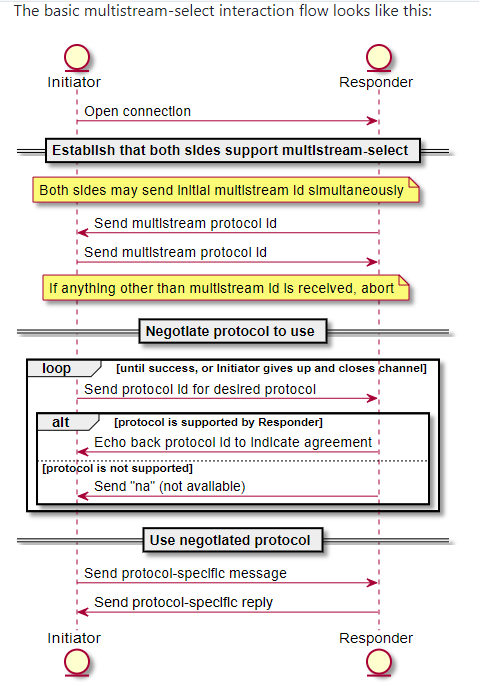
5.1.2. 连接升级
连接升级也是使用/multistream/1.0.0来协商的过程:
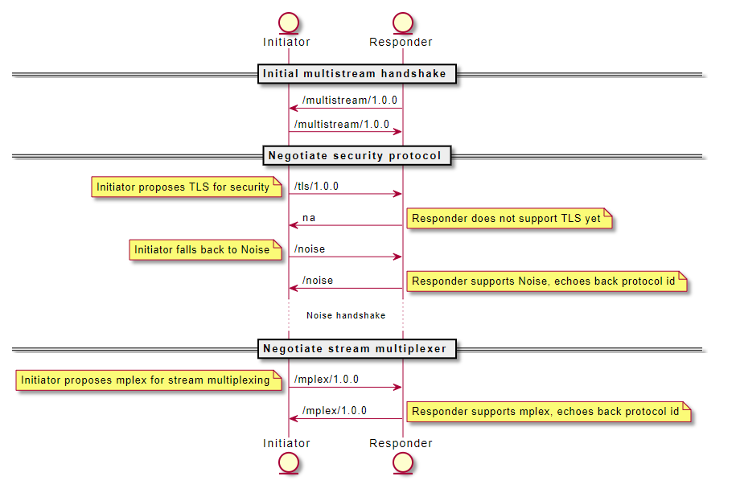
比如上图的过程, 在原始连接基础上:
- 一定是先协商安全特性, 这里发起方先发送
/tls/1.0.0, 但对方不支持, 发送方再协商/noise, 这回对方支持了 - 接下来协商多路复用, 一下子就协商成了
mplex/1.0.0
5.1.3. 新建stream
上面的过程是升级一个底层连接, 在连接上面, 可以新建多个逻辑上的stream.
新建stream的过程也是要使用/multistream/1.0.0协议来协商"应用层"的协议: 比如发送方发送/echo/1.0.1, 接收方查询自己是否有/echo/1.0.1协议的handler(或能match到这个协议的match handler), 没有就返回na\n, 那发送方就停止交互, 或者再换一个应用层协议. 如果接收方支持echo协议, 双方就可以按照echo协议开始干活了.
5.1.4. 具体实现
- 推荐使用Noise安全特性(又有说法是回切换到tls)
- 推荐使用mplex多路复用
- 推荐提供peer metadata storage, see go-libp2p-peerstore
- 推荐进行连接限制
- 连接状态通知类型:
| Event | Description |
|---|---|
| Connected | A new connection has been opened |
| Disconnected | A connection has closed |
| OpenedStream | A new stream has opened over a connection |
| ClosedStream | A stream has closed |
| Listen | We've started listening on a new address |
| ListenClose | We've stopped listening on an address |
5.1.5. 隧道
底层transport有两种情况
- non-browser: 通常是tcp或quic
- browser: 不能直接dial, 不能直接控制底层socket
能"穿透"的协议有
relay
- TURN: Traversal Using Relays around NAT (TURN), 基于中间节点
- circuit relay v1和circuit relay v2: 双方都知晓这个relay server的存在

- relay的地址格式:
[<relay peer multiaddr>]/p2p-circuit/<destination peer multiaddr>
Addressing
/p2p-circuit multiaddrs don't carry any meaning of their own. They need to encapsulate a /p2p address, or be encapsulated in a /p2p address, or both.
As with all other multiaddrs, encapsulation of different protocols determines which metaphorical tubes to connect to each other.
A /p2p-circuit circuit address, is formated following:
[<relay peer multiaddr>]/p2p-circuit/<destination peer multiaddr>
Examples:
/p2p-circuit/p2p/QmVT6GYwjeeAF5TR485Yc58S3xRF5EFsZ5YAF4VcP3URHt- Arbitrary relay node/ip4/127.0.0.1/tcp/5002/p2p/QmdPU7PfRyKehdrP5A3WqmjyD6bhVpU1mLGKppa2FjGDjZ/p2p-circuit/p2p/QmVT6GYwjeeAF5TR485Yc58S3xRF5EFsZ5YAF4VcP3URHt- Specific relay node
This opens the room for multiple hop relay, where the second relay is encapsulated in the first relay multiaddr, such as:
<1st relay>/p2p-circuit/<2nd relay>/p2p-circuit/<dst multiaddr>
A few examples:
Using any relay available:
/p2p-circuit/p2p/QmTwo- Dial QmTwo, through any available relay node (or find one node that can relay).
- The relay node will use peer routing to find an address for QmTwo if it doesn't have a direct connection.
/p2p-circuit/ip4/../tcp/../p2p/QmTwo- Dial QmTwo, through any available relay node, but force the relay node to use the encapsulated
/ip4multiaddr for connecting to QmTwo.
- Dial QmTwo, through any available relay node, but force the relay node to use the encapsulated
Specify a relay:
/p2p/QmRelay/p2p-circuit/p2p/QmTwo- Dial QmTwo, through QmRelay.
- Use peer routing to find an address for QmRelay.
- The relay node will also use peer routing, to find an address for QmTwo.
/ip4/../tcp/../p2p/QmRelay/p2p-circuit/p2p/QmTwo- Dial QmTwo, through QmRelay.
- Includes info for connecting to QmRelay.
- The relay node will use peer routing to find an address for QmTwo.
Double relay:
/p2p-circuit/p2p/QmTwo/p2p-circuit/p2p/QmThree- Dial QmThree, through a relayed connection to QmTwo.
- The relay nodes will use peer routing to find an address for QmTwo and QmThree.
- We'll not support nested relayed connections for now, see Future Work section.
STUN-like
让另外一个host来观测自己是否是在NAT里面, 并帮助自己发现端口映射. libp2p使用AutoNAT和identify来实现
Coordination
在relay协议基础上, 让两个host来互相写作进行打洞. 比如Session Description Protocol (SDP) and Direct Connection Upgrade through Relay.
节点发现机制
这里主要是libp2p Kademlia and Gossipsub protocol
几种场景
- Public Non-Browser (A) to Public Non-Browser (B): 不需要打洞, 直接连.
- Private Non-Browser (A) to Public Non-Browser (B): 不需要打洞, A可以直接连B
- Private Browser (A) to Public Non-Browser (B): B需要支持Websocket, 因为之后websocket才能直接连. B也必须支持TLS
- Public or Private Non-Browser (A) to Private Non-Browser (B): 可以有几种方式连接:
- B使用了AutoNAT和Identify得到"对外"的ip和端口, 这样A就能够访问到. 但A或B是symmeritc, NAT这招就不好用了.
- B使用 circuit relay v2 protocol协议, 先主动连接某个relay server, B广播自己的relay地址让. A通过访问这个relay地址来访问B, A和B连接上之后, 执行升级协议Direct Connection Upgrade through Relay, 进最大可能做打洞建立直接连接.
问答
- 打洞失败会怎么样?
确实有可能失败, 没办法, 上层的协议要接受这一点. 但两个节点间还是可以用relay节点连接, 虽然这个连接是比较绕远的, 但没办法. - 为什么同时使用AutoNAT and STUN, 为什么不用其中一个就好了?
browser场景下只能用STUN, 不能用AutoNAT. TCP或QUIC场景下可以用STUN取代AutoNAT. --但上文中看到, AutoNAT配合identify机制, 是libp2p对SATUN的实现.
5.1.6. 将来work
- 优化协商协议multistream-select
- 优化connection manager
- 支持quic(好像已经支持了)
- event bus
5.2. Peer Ids and Keys
libp2p使用使用密钥来给message签名, 以及生成peer ID. 下面是key的protobuf定义
syntax = "proto2";
enum KeyType {
RSA = 0;
Ed25519 = 1;
Secp256k1 = 2;
ECDSA = 3;
}
message PublicKey {
required KeyType Type = 1;
required bytes Data = 2;
}
message PrivateKey {
required KeyType Type = 1;
required bytes Data = 2;
}
其中data域可以有其他的编码方式 PrivateKey不会在线路中传输, 但可以以protobuf的编码保存在本地存储上, 从而可以被load来重用这个key.
5.2.1. key的使用场景
- 给message签名
- IPNS records
- PubSub messages
- SECIO handshake
- 生成peerID
5.3. identify协议
用/ipfs/id/1.0.0和/ipfs/id/push/1.0.0来查询remote peer和广播自己的peerID.
里面包含public key
message Identify {
optional string protocolVersion = 5;
optional string agentVersion = 6;
optional bytes publicKey = 1;
repeated bytes listenAddrs = 2;
optional bytes observedAddr = 4;
repeated string protocols = 3;
}
5.4. mplex协议
mplex是个简单的多路复用协议, 比如简单到没有流控.
- open一个streamd时候要先生成个stream ID, stream名只是用来debug
- 写stream是个message, 用
MessageReceiver(1) orMessageInitiator(2)标记是否是发起者, data域是你要写的内容, 最大1MB 还有大小限制?! - 可以半关
- reset操做会同时关闭读和写
5.5. Rendezvous集结协议
一个去中心化的, 轻量化的, 通用的发现协议. 我的理解是加入集结就能发现周边的peer.
- During bootstrap, a node can use known rendezvous points to discover peers that provide critical services. For instance, rendezvous can be used to discover circuit relays for connectivity restricted nodes.
- During initialization, a node can use rendezvous to discover peers to connect with the rest of the application. For instance, rendezvous can be used to discover pubsub peers within a topic.
- In a real time setting, applications can poll rendezvous points in order to discover new peers in a timely fashion.
- In an application specific routing setting, rendezvous points can be used to progressively discover peers that can answer specific queries or host shards of content.
5.6. 大概原理
实现了/rendezvous/1.0.0的每个node都可以是集结点, 其他节点连接到集结点时, 会注册自己的名字空间.
其他节点可以向集结点发请求查询某个namespace, 返回其包括的节点. 也支持cookie来进行增量查询
注册的时候可以指定TTL, 设置老化时间. 默认时2个小时, 最大72小时.
namespace最大255, 最大注册数1000
5.7. Protocols汇总
These specs define wire protocols that are used by libp2p for connectivity, security, multiplexing, and other purposes.
The protocols described below all use protocol buffers (aka protobuf) to define message schemas. Version proto2 is used unless stated otherwise.
- identify - Exchange keys and addresses with other peers
- mplex - The friendly stream multiplexer
- plaintext - An insecure transport for non-production usage
- pnet - Private networking in libp2p using pre-shared keys
- pubsub - PubSub interface for libp2p
- relay - Circuit Switching for libp2p (similar to TURN)
- rendezvous - Rendezvous Protocol for generalized peer discovery
- secio - SECIO, a transport security protocol for libp2p
- tls - The libp2p TLS Handshake (TLS 1.3+)
6. 基础知识
6.1. 公钥与私钥
数字签名是什么？
鲍勃有两把钥匙，一把是公钥，另一把是私钥。
鲍勃把公钥送给他的朋友们----帕蒂、道格、苏珊----每人一把。
苏珊要给鲍勃写一封保密的信。她写完后用鲍勃的公钥加密，就可以达到保密的效果。
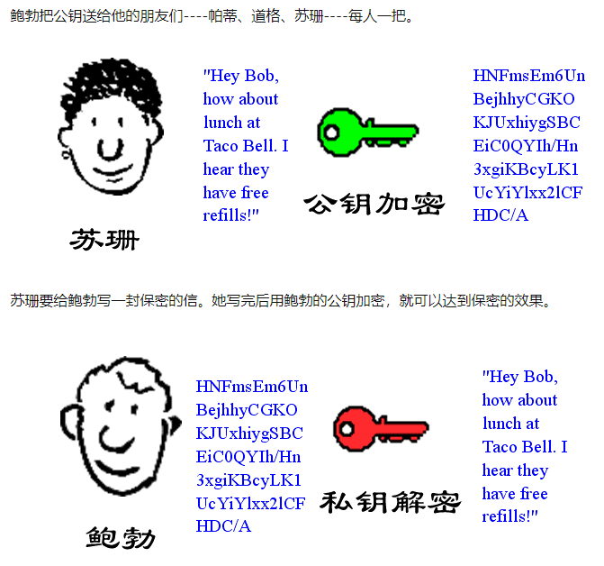
鲍勃收信后，用私钥解密，就看到了信件内容。这里要强调的是，只要鲍勃的私钥不泄露，这封信就是安全的，即使落在别人手里，也无法解密。
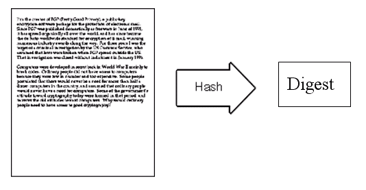
鲍勃给苏珊回信，决定采用"数字签名"。他写完后先用Hash函数，生成信件的摘要（digest）。
然后，鲍勃使用私钥，对这个摘要加密，生成"数字签名"（signature）。
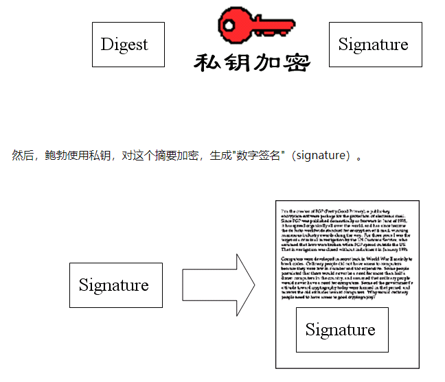
鲍勃将这个签名，附在信件下面，一起发给苏珊。
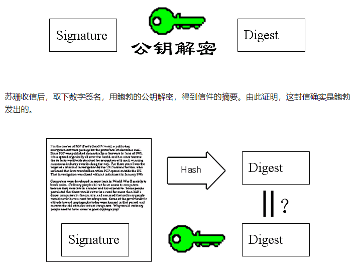
苏珊再对信件本身使用Hash函数，将得到的结果，与上一步得到的摘要进行对比。如果两者一致，就证明这封信未被修改过。
复杂的情况出现了。道格想欺骗苏珊，他偷偷使用了苏珊的电脑，用自己的公钥换走了鲍勃的公钥。此时，苏珊实际拥有的是道格的公钥，但是还以为这是鲍勃的公钥。因此，道格就可以冒充鲍勃，用自己的私钥做成"数字签名"，写信给苏珊，让苏珊用假的鲍勃公钥进行解密。
后来，苏珊感觉不对劲，发现自己无法确定公钥是否真的属于鲍勃。她想到了一个办法，要求鲍勃去找"证书中心"（certificate authority，简称CA），为公钥做认证。证书中心用自己的私钥，对鲍勃的公钥和一些相关信息一起加密，生成"数字证书"（Digital Certificate）。
鲍勃拿到数字证书以后，就可以放心了。以后再给苏珊写信，只要在签名的同时，再附上数字证书就行了。
苏珊收信后，用CA的公钥解开数字证书，就可以拿到鲍勃真实的公钥了，然后就能证明"数字签名"是否真的是鲍勃签的。
下面，我们看一个应用"数字证书"的实例：https协议。这个协议主要用于网页加密。
首先，客户端向服务器发出加密请求。
服务器用自己的私钥加密网页以后，连同本身的数字证书，一起发送给客户端。
客户端（浏览器）的"证书管理器"，有"受信任的根证书颁发机构"列表。客户端会根据这张列表，查看解开数字证书的公钥是否在列表之内。
如果数字证书记载的网址，与你正在浏览的网址不一致，就说明这张证书可能被冒用，浏览器会发出警告。
如果这张数字证书不是由受信任的机构颁发的，浏览器会发出另一种警告。
6.1.1. 讨论
- 那么鲍勃发给苏珊的信件，帕蒂不是也能打开了么??(既然大家都有鲍勃的公钥)?
这个问题其实被作者简化了（如果我没记错的话），实际上bob和Susan的通信过程应该是：1.他俩用公钥和私钥通信达成一个临时的协议，包括一个对称加密的密钥，密码因为是通过非对称加密的方式（就像此文第一个加密传输过程)传输所以能在第一次传输的时候也保证安全和正确。2.然后他俩用这个对称加密的密钥通信，帕蒂就没办法解密密文了。 所以实际上真正的通信过程应该是大部分基于对称加密，和小部分（对称加密密钥)基于非对称加密。 - 你好，本人非密码学专业出身。可否请教一下：既然 Bob 公钥是公开的，那 Susan 用 Bob 公钥加密的内容为什么无法被其他有 Bob 公钥的人解密呢？
公钥加密得到的密文只能由私钥进行解密，如果不知道私钥，仅有公钥和密文是无法计算出明文的
6.2. 对称加密（Symmetric Cryptography）
对称加密是最快速、最简单的一种加密方式，加密（encryption）与解密（decryption）用的是同样的密钥（secret key）。对称加密有很多种算法，由于它效率很高，所以被广泛使用在很多加密协议的核心当中。
对称加密通常使用的是相对较小的密钥，一般小于256 bit。因为密钥越大，加密越强，但加密与解密的过程越慢。如果你只用1 bit来做这个密钥，那黑客们可以先试着用0来解密，不行的话就再用1解；但如果你的密钥有1 MB大，黑客们可能永远也无法破解，但加密和解密的过程要花费很长的时间。密钥的大小既要照顾到安全性，也要照顾到效率，是一个trade-off。
2000年10月2日，美国国家标准与技术研究所（NIST--American National Institute of Standards and Technology）选择了Rijndael算法作为新的高级加密标准（AES--Advanced Encryption Standard）。.NET中包含了Rijndael算法，类名叫RijndaelManaged，下面举个例子。 对称加密的一大缺点是密钥的管理与分配，换句话说，如何把密钥发送到需要解密你的消息的人的手里是一个问题。在发送密钥的过程中，密钥有很大的风险会被黑客们拦截。现实中通常的做法是将对称加密的密钥进行非对称加密，然后传送给需要它的人。
6.3. 非对称加密（Asymmetric Cryptography）
非对称加密为数据的加密与解密提供了一个非常安全的方法，它使用了一对密钥，公钥（public key）和私钥（private key）。私钥只能由一方安全保管，不能外泄，而公钥则可以发给任何请求它的人。非对称加密使用这对密钥中的一个进行加密，而解密则需要另一个密钥。比如，你向银行请求公钥，银行将公钥发给你，你使用公钥对消息加密，那么只有私钥的持有人--银行才能对你的消息解密。与对称加密不同的是，银行不需要将私钥通过网络发送出去，因此安全性大大提高。
目前最常用的非对称加密算法是RSA算法，是Rivest, Shamir, 和Adleman于1978年发明，他们那时都是在MIT。.NET中也有RSA算法，请看下面的例子： 虽然非对称加密很安全，但是和对称加密比起来，它非常的慢，所以我们还是要用对称加密来传送消息，但对称加密所使用的密钥我们可以通过非对称加密的方式发送出去。为了解释这个过程，请看下面的例子：
（1） Alice需要在银行的网站做一笔交易，她的浏览器首先生成了一个随机数作为对称密钥。
（2） Alice的浏览器向银行的网站请求公钥。
（3） 银行将公钥发送给Alice。
（4） Alice的浏览器使用银行的公钥将自己的对称密钥加密。
（5） Alice的浏览器将加密后的对称密钥发送给银行。
（6） 银行使用私钥解密得到Alice浏览器的对称密钥。
（7） Alice与银行可以使用对称密钥来对沟通的内容进行加密与解密了。
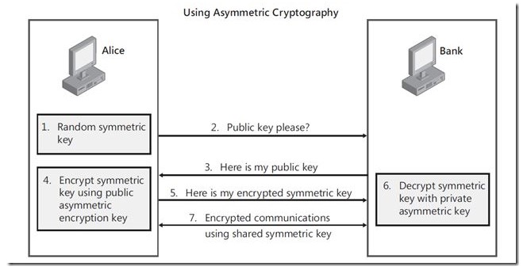
6.4. 总结
（1） 对称加密加密与解密使用的是同样的密钥，所以速度快，但由于需要将密钥在网络传输，所以安全性不高。
（2） 非对称加密使用了一对密钥，公钥与私钥，所以安全性高，但加密与解密速度慢。
（3） 解决的办法是将对称加密的密钥使用非对称加密的公钥进行加密，然后发送出去，接收方使用私钥进行解密得到对称加密的密钥，然后双方可以使用对称加密来进行沟通。